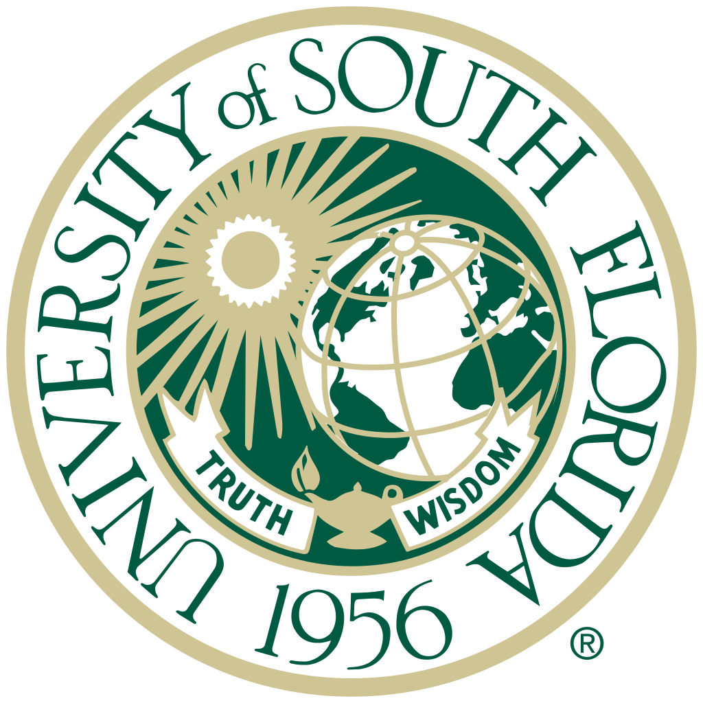

Curriculum Vitae/Résumé
Education
Master of Arts, Library & Information Studies (Projected May 2018)
University of Wisconsin–Madison

Master of Arts, English & American Literature (2010)
University of South Florida
Thesis: "A border is a veil not many people can wear": Testimonial fiction and transnational healing in Edwidge Danticat's
The Farming of Bones and Nelly Rosario's
Song of the Water Saints
Bachelor of Arts, English & American Literature (2007)
University of South Florida
Work Experience
-
Graduate Assistant
- Reference and Interlibrary Loan, Evening and Weekend Supervisor
- Oscar Rennebohm Library at Edgewood College
- August 2016 – Present
-
Library Assistant
- National Wildlife Health Center, U.S. Geological Survey
- November 2016 – Present
-
Field Placement
- College Library, University of Wisconsin–Madison
- August 2017 – December 2017
-
Reader/Grader
- Information School, University of Wisconsin–Madison
- October 2017 – December 2017
-
Constructed Response Rater
- Educational Testing Services
- GRE, TOEIC, TOEFL Junior, TOEFL Primary, SAWS
- May 2010 – October 2016
-
Freelance Writer/Editor
- (Self-employed)
- May 2010 – Present
-
ESL Tutor
- (Self-employed)
- July 2011 – June 2014
-
Graduate Teaching Assistant
- Department of English, University of South Florida
- August 2008 – May 2010
Technology Skills
- Languages | HTML, CSS, JavaScript, MySQL
- Course Management | Blackboard, Canvas
- Content Management | LibGuides, ContentDM
- Library | Millennium, Alma, Koha; ILLiad and WorldShare
- Virtual Reference | LibAnswers, LibChat, LibraryH3lp
- eLearning and Screen Capture | Adobe Captivate, Screencast-O-Matic, Jing
- Visualization | Tableau
- Data | OpenRefine
Presentations
-
"Academic Freedom and the Library: Employing a Social Justice Lens for Understanding Intellectual Freedom"
- Wisconsin Association of Academic Libraries Annual Conference 2018 Co-presenter
Projects
- Website Design
Affiliations
- American Library Association (ALA)
- Wisconsin Library Association (WLA)
- WLA Student Special Interest Group
- REFORMA Student Group
Volunteer Experience
- University of Wisconsin Go Big Read Discussion Facilitator (Fall 2016, Fall 2017)
- Wisconsin Association of Academic Libraries 2018 Conference Planning Committee- UW–Madison Liaison
- Wisconsin Library Association 2017 Conference Planning Committee- UW–Madison Liaison
- Wisconsin Library Association Student Special Interest Group- Chair 2017-2018
Certificates
- Project ENABLE Accessibility Training